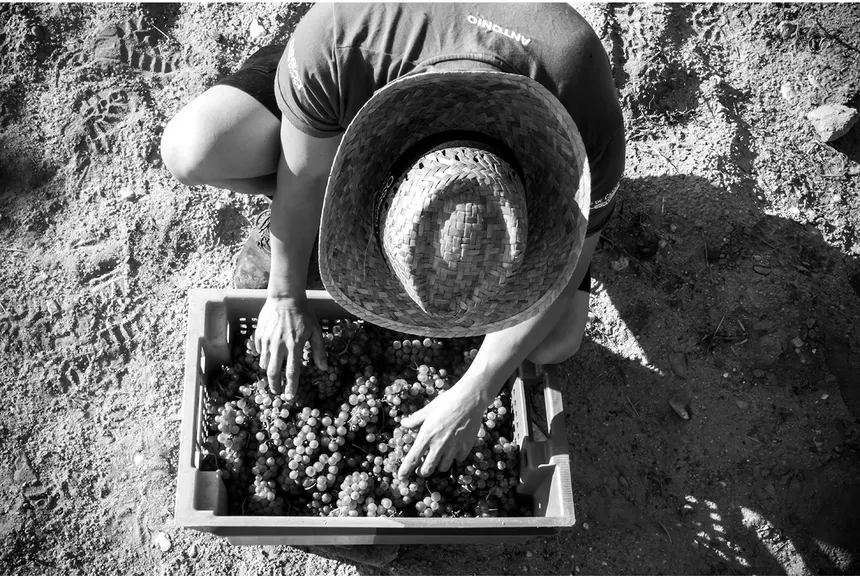

Las condiciones climáticas excepcionales de este verano han dado lugar a una cosecha de Garnacha de calidad extraordinaria en nuestros viñedos de Cariñena. Una combinación única de sol, temperatura y viento que se traduce en fruta de concentración máxima.
Después de meses de observación y cuidado minucioso de cada cepa, el equipo de viticultores de Tierra Vieja ha culminado una vendimia que difícilmente olvidarán. La uva Garnacha, nuestra variedad más querida y representativa de la Denominación de Origen Cariñena, ha desarrollado este año concentraciones de azúcar y antocianos que superan las medias históricas de la última década.
"Es la mejor cosecha de Garnacha que hemos tenido en veinte años. La tierra, el viento y el sol han jugado perfectamente a nuestro favor." — Miguel Ángel Lorente, Director de Viticultura
¿Por qué ha sido tan especial esta cosecha?
Tres factores climáticos se han alineado de manera excepcional durante el periodo de maduración de la vid:
Veranos más secos
Las lluvias de primavera cargaron el suelo de agua justo antes del periodo de sequía, favoreciendo una maduración lenta y concentrada sin estrés hídrico extremo.
El Cierzo, nuestro aliado
El viento del norte que caracteriza Cariñena ha secado la humedad superficial de los racimos, evitando enfermedades y aportando una acidez natural excepcional.
Noches frescas
La amplitud térmica entre el día y la noche ha sido de 18 °C de media, preservando los aromas varietales y la frescura que distinguen a nuestra Garnacha.
El proceso de recogida: a mano, racimo a racimo
En Tierra Vieja nos negamos a mecanizar la vendimia de nuestras viñas viejas. Cada racimo es seleccionado a mano por los vendimiadores, quienes llevan décadas reconociendo el punto exacto de maduración. Este año, la recolección comenzó el 12 de septiembre y se prolongó durante tres semanas, respetando los tiempos de cada parcela.

¿Qué vinos podremos esperar?
La materia prima de esta cosecha promete dar lugar a vinos de intenso color rubí, con aromas explosivos a frutos rojos silvestres —cereza, mora y frambuesa madura— y un paladar redondo y sedoso con una acidez que garantiza una vida larga en botella.
Los primeros vinos de la cosecha 2025 estarán disponibles en nuestra tienda a partir de primavera de 2026, tanto en versión joven como en crianza. Las primeras partidas tendrán un carácter exclusivo y cantidad limitada.
"Cada botella que salga de esta cosecha llevará dentro los mejores meses que hemos vivido en el viñedo." — Carmen Valiente, Enóloga Jefe
Reserva tu botella antes de que se agote
Dado el carácter excepcional de esta cosecha, las unidades serán limitadas. Si quieres asegurarte una de las primeras botellas de nuestra Garnacha 2025, pasa por nuestra tienda online o contáctanos directamente. También puedes visitarnos en bodega y vivir la experiencia de primera mano durante nuestras rutas de enoturismo de primavera.